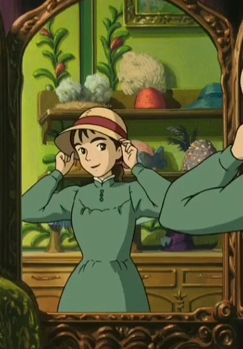

Один из самых популярных мультфильмов Хаяо Миядзаки.
Злая и ревнивая Ведьма Пустоши накладывает проклятие на девушку-шляпницу за то, что та влюбилась в могущественного волшебника по имени Хаул. Девушка превращается в бабушку и убегает из города. По дороге она встречает замок, который может передвигаться, и остаётся в нём жить. Почти на всех героях мультфильма лежат проклятия, которые предстоит снять.
Персонажи

Софи Хаттер Старшая из двух сестёр скромная восемнадцатилетняя девушка-шляпница. Уверена в том, что она простушка, не блещущая красотой. Также считает, что ей по праву старшей сестры уготована жизнь, лишённая всяческих приключений и волнений. Всё своё время девушка проводит в шляпном магазине, но однажды решается на прогулку к своей младшей сестре, во время которой встречает Хаула, который спасает скромницу от надоедливых солдат. Позднее Ведьма Пустоши насылает на неё проклятье и превращает в дряхлую старушку. Но это событие становится первым шагом к её новой жизни, насыщенной приключениями и новыми впечатлениями. Софи — девушка с сильной волей и упорным характером, она с достоинством преодолевает все беды и неприятности, которые на неё сваливаются. Не боится Хаула, сама устраивается в его замке в качестве уборщицы, усмиряет Кальцифера, заботится о Ведьме Пустоши и Маркле, несмотря на то, что сама находится под действием проклятия.
Хаул Таинственный колдун-отшельник 27 лет от роду. Он известен своей напыщенностью и злодеяниями. После того, как его ходячий замок, пользующийся дурной славой, был замечен недалеко от Маркет Чиппинг, появились слухи о том, что он ищет красивых молодых девушек для того, чтоб украсть их сердца. Родиной Хаула является Уэльс, страна, неизвестная большинству героев книги-оригинала и аниме-адаптации. Семья Хаула не осведомлена ни о деятельности Хаула в мире Софи, ни о самом существовании этого мира. Несмотря на свою репутацию, в реальности Хаул – очаровательный, располагающий к себе человек, смышленый и внимательный к проблемам других, но несколько самовлюбленный и временами упрям. Он вежлив и учтив, обладает хорошими манерами, тщательно следит за своей внешностью: любит красить волосы и облачаться в красивую одежду.
Маркл Является учеником Хаула. Он – сирота, живет в замке Хаула. Его ученичество в основном заключается в выполнении поручений колдуна и походе за покупками. По натуре – добр и покладист, стойко переносит постоянные перемены настроения Хаула, бардак в замке и частое отсутствие пропитания. К Софи сначала относится с неприязнью и предубеждением, но со временем сильно к ней привязывается.
Ведьма Пустоши Ведьма Пустоши – в прошлом великолепная волшебница, жертва демона жадности из-за нежелания расставаться с молодостью. После заключения контракта с демоном жадности поселяется в пустошах, все силы тратит на поиски Хаула, принося миру зло и разрушения. Мадам Саллиман призывает ее в Королевский Дворец, где своими чарами расторгает контракт Ведьмы с демоном. Ведьма превращается в беспомощную старушку и увязывается за Софи, которая не бросает ее на произвол судьбы, а предлагает свою помощь и заботится о Ведьме, несмотря на зло, которое та причинила девушке в прошлом.
Кальцифер Падающая звезда, огненный демон, который был пойман Хаулом. Из-за нежелания умирать заключил сделку с колдуном. По её условиям Кальцифер получил сердце Хаула и длительную жизнь, а колдун — полный доступ к значительным силам Кальцифера. Как оказалось, впоследствии сделка не принесла выгоды и удовлетворения ни огненному демону, ни колдуну, но разорвать её мог только тот, кто участником сделки не являлся. Демон управляет движением замка Хаула, обладает такими человеческими чертами, как чувство юмора, обидчивость и доброта. Повинуется только Хаулу, но и Софи способна заставить его помогать с помощью угроз и напоминания об их тайной договорённости.
Хин Хин – странная собачка, которая повсюду следует за Софи. Он – помощник Мадам Саллиман, приставлен к Софи для слежки за Хаулом, но вышедший из ее подчинения. Когда Софи по просьбе Хаула идет в Королевский Дворец на встречу с Мадам Саллиман, она принимает увязавшегося за ней Хина за перевоплощенного Хаула, и тащит его до самого конца огромной лестницы, несмотря на его вес. Впоследствии Хин становится любимцем Ведьмы Пустоши.
Салиман Главная волшебница Его Величества и Королевская Волшебница Кингсбери. У этой загадочной леди большие волшебные полномочия и огромное влияние в Королевском Дворце. Отказ Хаула предоставить свои колдовские способности в помощь армии побуждает Мадам Салиман к личной встрече с Хаулом. Салиман берётся за каждую ниточку, чтобы выиграть войну.